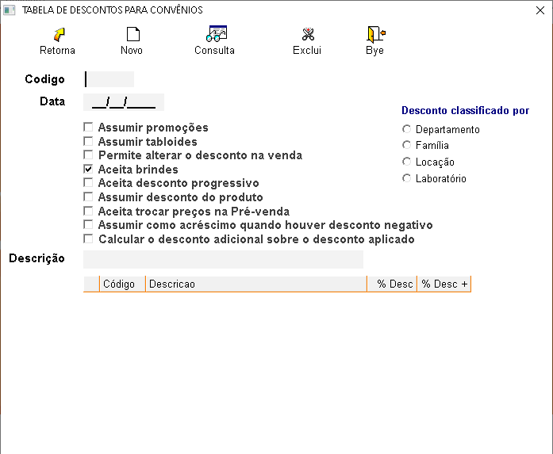

É uma tabela criada para cadastrar os descontos que serão aplicados aos produtos no ato da venda, podendo
ser
classificados por: DEPARTAMENTO, FAMÍLIA, LOCALIZAÇÃO e LABORATÓRIOS.
+Procedimento para cadastrar uma tabela de desconto:
No sistema:
- Clique no ícone
 ou
pressione
(F3).
ou
pressione
(F3).
- Para que o sistema gere um código sequencial (automático), note que campos CÓDIGO e DATA serão
preenchidos automaticamente. As opções Assumir tablóides e Assumir promoções serão marcadas.
- Você pode, se desejar, informar/digitar o seu código de controle. Caso este código não esteja
utilizado,
o sistema permitirá o cadastro.
- Informe a porcentagem de desconto a ser aplicada ao produto no ato da venda, de acordo com a forma
escolhida de classificação.
OBS.: As informações sobre cada campo estão no final da página.
+É possível alterar uma tabela de desconto?
Sim, selecione a tabela em questão, e informe os dados a serem alterados e tecle ENTER para salvar.
+É possível excluir uma tabela de desconto?
Sim, mas deve-se atentar aos seguintes detalhes:
- Se a tabela estiver vinculada a algum convênio, a exclusão não será permitida.
+Descrição dos campos da tabela de desconto:

- Código: Gerado automaticamente pelo sistema, ou pode ser informado manualmente.
- Data: Gerado automaticamente pelo sistema quando clicar em novo.
- Assumir promoções: Quando selecionado essa opção, se tiver alguma promoção
cadastrada
no produto, o sistema assumirá o valor da promoção em vez do desconto cadastrado na tabela.
- Assumir tablóides: Quando selecionado essa opção, se tiver algum tablóide
cadastrado
para o produto, o sistema assumirá o preço do tablóide, em vez do desconto cadastrado na tabela.
- Permite alterar o desconto na venda:selecione para permitir informar desconto na
venda.
- Aceita brindes:Marque para aceitar brindes.
- Aceita desconto progressivo:Marque caso seja permitido desconto progressivo.
- Assumir desconto do produto:irá assumir sempre o desconto informado no cadastro do
produto.
- Aceita trocar preços na pré-venda:marque se será permitido alterar preços na pré
venda
- Assumir como acréscimo quando houver desconto negativo:marque para assumir como
acrescimo um desconto negativo.
- Calcular o desconto adicional sobre o desconto aplicado:Marque caso seja permitido
o
desconto adicional sobre o desconto aplicado para o convenio.
- Descrição: Informar uma descrição para a tabela de desconto.
- Desconto classificado por:
- Selecione a forma que serão classificados os descontos.

Após selecionar a forma de classificação, informe o percentual de desconto a ser aplicado no ato da
venda.
- %Desc: Aplica o desconto informado em porcentagem sobre o preço de venda.
- +%Desc: Aplica um desconto adicional em porcentagem sobre a porcentagem de desconto já predefinida na venda.
Após criar a tabela, retorne ao cadastro do convênio e vincule a tabela da seguinte forma:
- Informe o código da tabela.

Caso o convênio selecionado possua algum tipo de desconto cadastrado, o sistema informará com a
seguinte
mensagem:

Clicando em OK será exibida a seguinte mensagem: